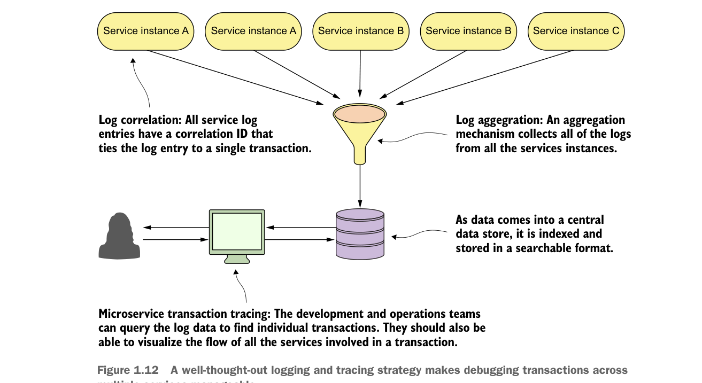

1.9.5 Microservice logging and tracing patterns
The beauty of the microservice architecture is that a monolithic application is broken down into small pieces of functionality that can be deployed independently of one another. The downside of a microservice architecture is that it’s much more difficult to debug and trace what the heck is going on within your application and services.
For this reason, we’ll look at three core logging and tracing patterns:
- Log correlation—How do you tie together all the logs produced between services for a single user transaction? With this pattern, we’ll look at how to implement a correlation ID, which is a unique identifier that will be carried across all service calls in a transaction and can be used to tie together log entries produced from each service.
- Log aggregation—With this pattern we’ll look at how to pull together all of the logs produced by your microservices (and their individual instances) into a single queryable database. We’ll also look at how to use correlation IDs to assist in searching your aggregated logs.
- Microservice tracing—Finally, we’ll explore how to visualize the flow of a client transaction across all the services involved and understand the performance characteristics of services involved in the transaction.
Figure 1.12 shows how these patterns fit together. We’ll cover the logging and tracing patterns in greater detail in chapter 9.

A well-thought-out logging and tracing strategy makes debugging transactions across multiple services manageable.